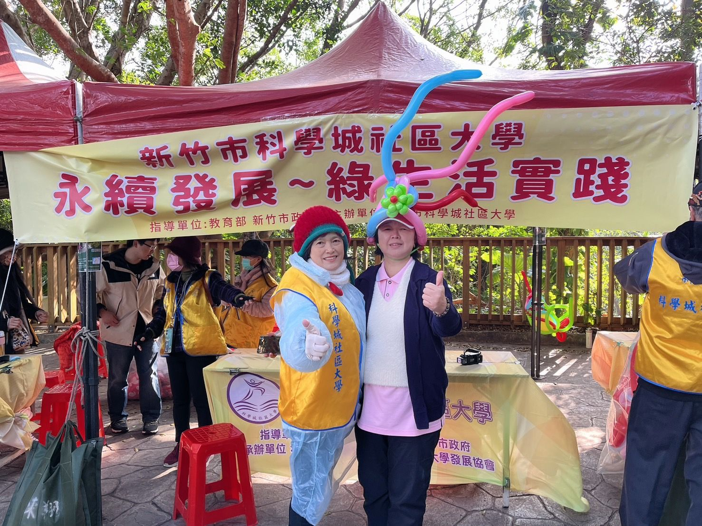
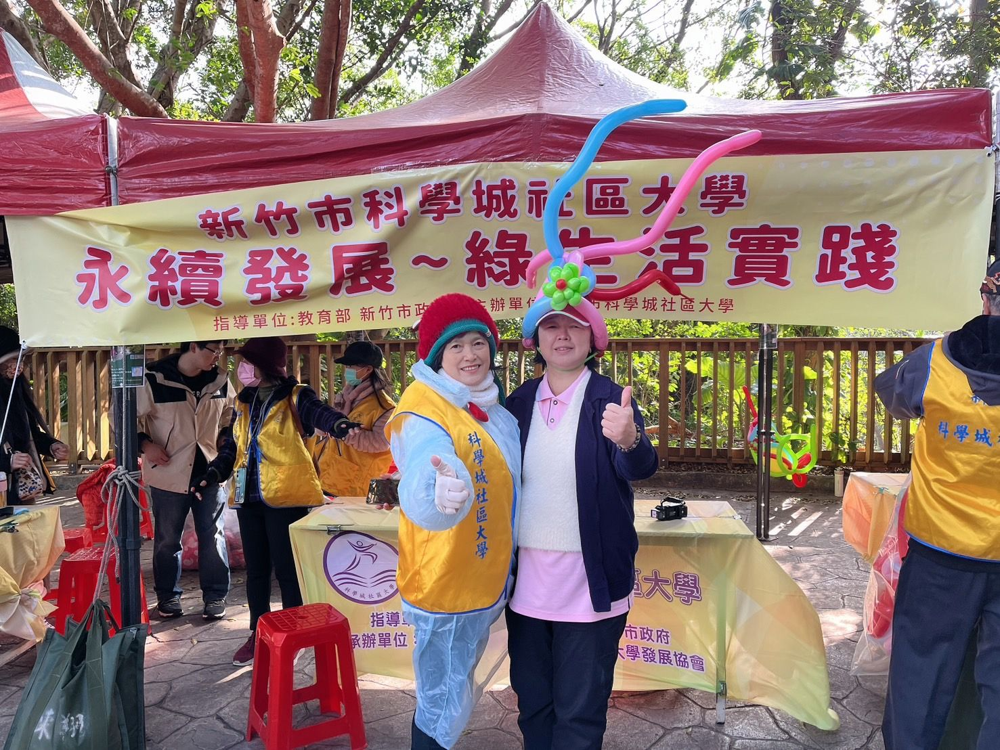
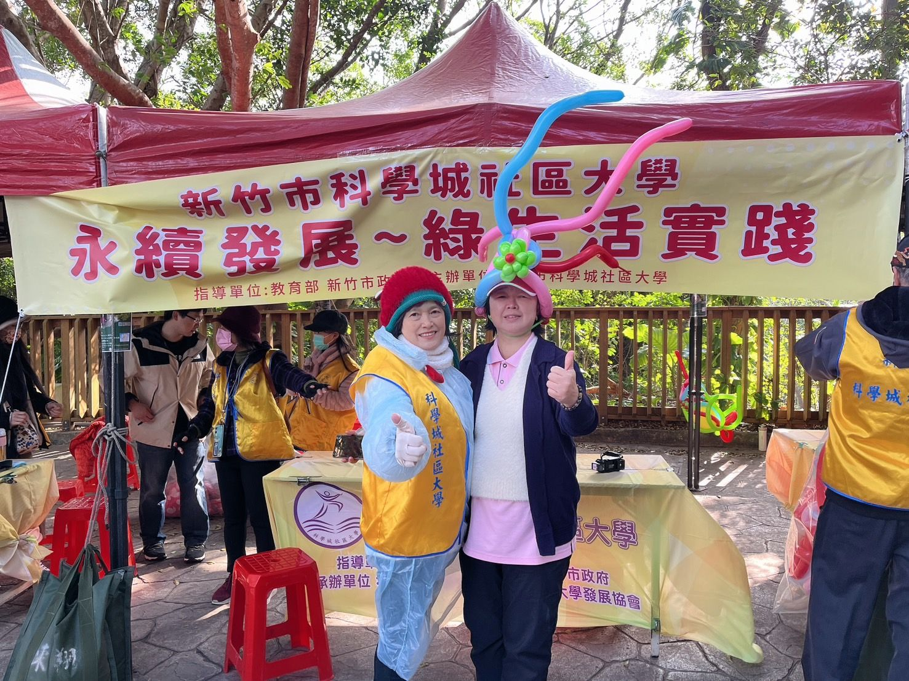

人物專訪、社區夥伴、人才師資庫。
教師分享、活動分享、學員分享。
山林系列、水資源系列。
優良店家採訪
濕地保育、溪流河域。
#駱國琴老師 分享心得
#智慧手機App軟體應用班
科學城社區大學113年秋
【科學城山林教育系列～永續發展綠生活實踐-變葉木步道 2024/12/28
【期末成果展✨】
今天的天氣雖然降至14度，但冷風吹不散我們的熱情！ 十八尖山，環山歩道於百年前(1924)建設，1928年正式命名，也是全臺灣唯一森林公園。一起來了解，這座「新竹的靠山」的歷史故事嗎！ 防空洞、#石觀音、動植物…，透過本次活動設計的路徑，循著導覽圖探索謎！ 我們班的同學有的負責折氣球攤位，有的駐點在美麗的變葉木步道及負責解說相關事宜，同時也吸引了許多民眾駐足參觀。 我們班透過一個個創意氣球作品，讓更多人感受到十八尖山的自然之美，再次與這片山林建立連結。看到大家臉上的笑容，是我們最大的成就！ 感謝每一位來到参加十八尖山尋寶趣支持我們的朋友，期末成果展圓滿成功！期待未來我們能為十八尖山帶來更多故事與活力～
#期末成果展 #折氣球創意
#十八尖山 #變葉木步道 #折氣球達人秀英
#永續發展 #綠生活實踐
#十八尖山 #山林教育

今天的十八尖山活動是113秋季成果展。有了前幾場的經驗，對十八尖山有更多的認識。活動從9:30開始，總共有五個站。 雅婷老師在服務中心旁，有日文和日式茶道。我的駐點是在國家重力基準站，國琴老師是在變葉木步道和服務旁的駐點，有同學提供氣球獎品。 袁立老師在竹高階梯步道入口處。夢龍老師在小百岳。 我準備了三個題目都是跟防空洞和國家重力基準站有關。只要有民眾來，我會先指引看一下這邊的看板，順道說明防空洞和國家重力基準站的由來。 大家都能利用活動願意去了解十八尖山的一切。回到服務台看到校長戴著很特別的氣球帽子，大家都玩的很開心。我想經由辦了那麼多場的活動，可以跟週邊朋友分享不一樣的十八尖山。
人物專訪、社區夥伴、人才師資庫。
教師分享、活動分享、學員分享。
山林系列、水資源系列。
優良店家採訪
濕地保育、溪流河域。